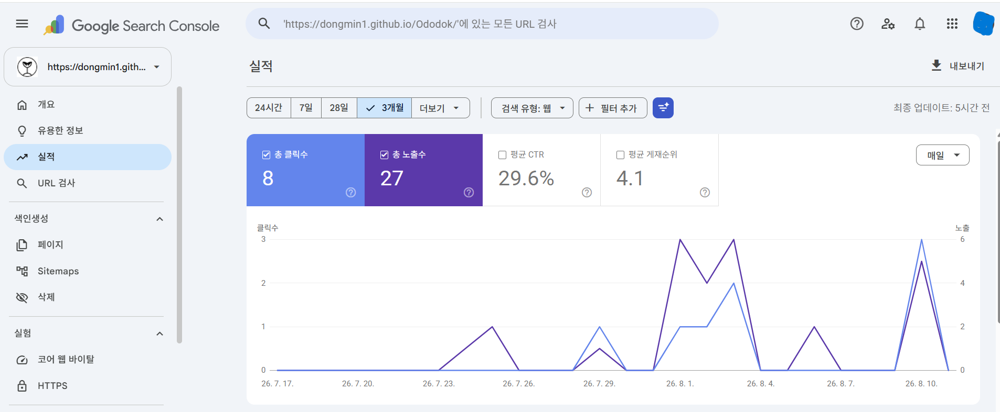
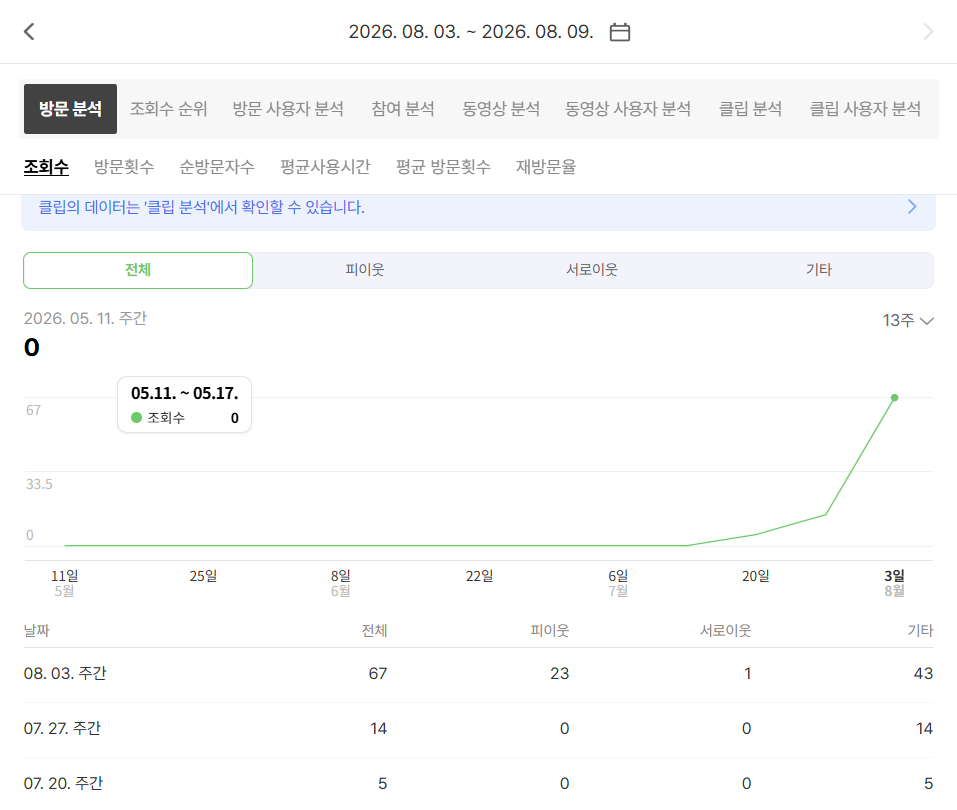

검색해도 나오지 않았습니다
브랜드명으로도, 관련 키워드로도 검색되지 않는 상태에서 출발했습니다. 홈페이지도, 콘텐츠도 없었습니다.
오도독 자체를 첫 번째 실험 대상으로 삼아, 검색되지 않던 브랜드가 검색되고 문의받는 브랜드로 성장하는 과정을 기록합니다. 오도독이 공개하는 사례 시리즈의 첫 번째 편입니다.
브랜드명으로도, 관련 키워드로도 검색되지 않는 상태에서 출발했습니다. 홈페이지도, 콘텐츠도 없었습니다.
검색엔진 등록, 사이트맵, 메타 정보, 콘텐츠 구조까지 — 광고 이전에 채워야 할 기본이 대부분 비어 있었습니다.
홈페이지 구축, 무료 기본진단 설계, SEO 기본 세팅, Google Search Console·네이버 서치어드바이저 등록을 순서대로 진행했습니다.
구글 노출 27회 · 클릭 8회, 네이버 블로그 주간 조회수 0 → 67회로 늘었습니다. 아직 크지 않지만 없던 숫자가 생기기 시작했다는 뜻입니다. 첫 문의, 첫 프로젝트는 아직입니다.


많은 곳이 완성된 성공 사례만 보여줍니다. 오도독은 다릅니다. 문제를 찾은 시점부터 지금까지 — 크든 작든 실제 숫자와 화면을 그대로 기록합니다. 부풀리지 않고, 숨기지도 않습니다. 이것이 오도독이 모든 사례를 공개하는 방식이고, 앞으로의 CASE 002, CASE 003도 같은 원칙으로 기록됩니다.